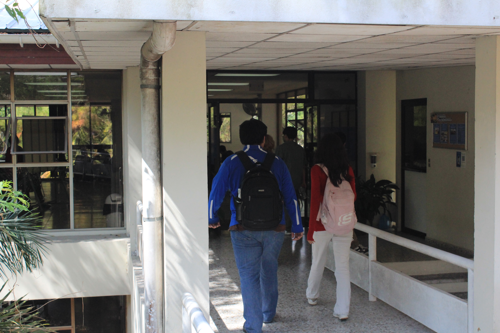

Biblioteca Rafael Meza Ayau
Su construcción inicio en el año 1991 en la cual su construcción fue patrocinada por la fundación Rafael meza ayau (nombre que lleva la biblioteca), y se inauguró en 1992 con el traslado de la universidad a Soyapango.
Contenido
La biblioteca inició sus actividades el 14 de enero de 1986 en la Escuela Domingo Savio, en San Salvador. Ese mismo año, el terremoto dañó las instalaciones, por lo que sus colecciones fueron trasladadas temporalmente al Instituto Técnico Ricaldone entre 1986 y 1989.!
En 1992, con el traslado de la universidad a Soyapango, se inauguró el edificio principal de la biblioteca, llamado Rafael Meza Ayau, financiado por una fundación del mismo nombre.
Galeria

Informacion General
| Es un edificio muy amplio | Edificio de 3 niveles |
|---|---|
| Contiene un area de estudio | Área que contiene un salon de computadoras y cubiculos individuales. |
| Incluye un museo de pinturas | Area designada a pinturas de artistas nacionales y de la universidad. |
| Area de descanso | Son 3 cómodos asientos en los que puedes descansar. |
Caracteristicas
- Oasis
- Cubiculos individuales y en grupo
- Salon de pintura